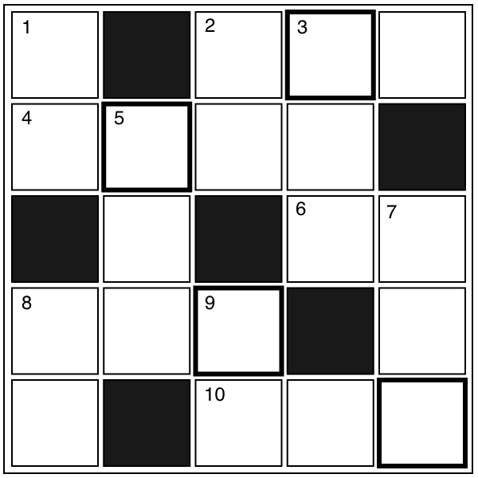

クロスワード
【→ PDF（印刷用）】

- タテのカギ
-
- １. 生まれた川に帰る魚。日本人がよく食べる。
- ２. ある人の下で働く人のこと。『上司』の反対は？
- ３. 勉強や仕事で使う台のこと。『デスク(desk)』は和語で？
- ５. 小さなクジラ。
- ７. 『大型』の反対は？
- ８. 人の体の表面にあるのは？
- ９. 『セット(set)』は和語で？
- ヨコのカギ
-
- ２. 『本』は外来語で？
- ４. 何かをするために、事前に方法や順番を考えること。
- ６. 環境とともに生きていくように考えること。○○ロジー。
- ８. 比べること。
- 10. 『敵』の反対は？
【→ 解答を見る】